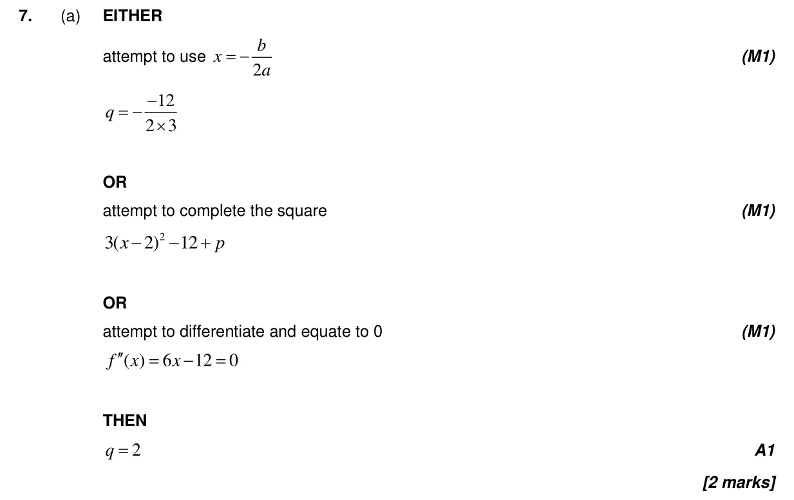
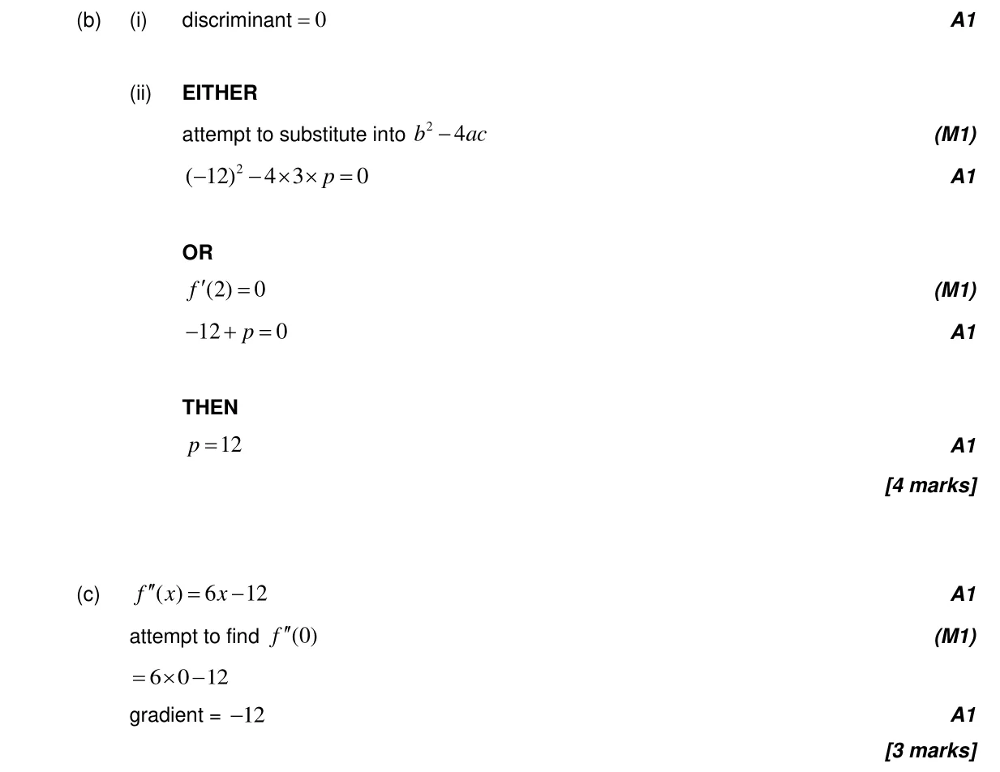
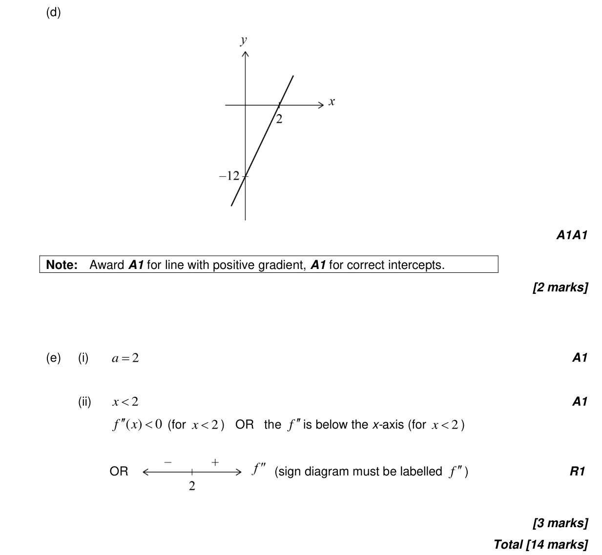

2.7 Solutions of quadratic equations and inequalities, discriminant and nature of roots5.7 The second derivative2.6 Quadratic function5.3 Differentiating polynomials, n in Z5.8 Optimization, local extrema and points of inflexion2.3 Graphs of functions
Question

Markscheme


